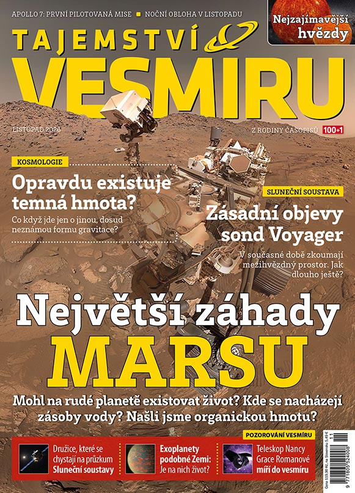

Může být vesmír bez temné hmoty?
Martin Štěpánů ve výzkumu GDS reprodukoval sledované účinky připisované temné hmotě a temné energii pomocí dynamiky jediného gravitačního pole, bez zavedení těchto složek do modelu. V testech rotačních křivek galaxií vytváří nelineární odezva pole na běžnou hmotu efektivní halo s charakteristickým chováním hal temné hmoty typu NFW.